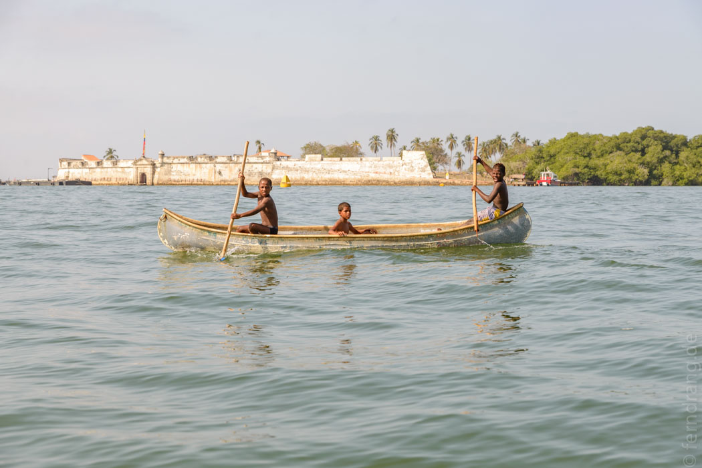
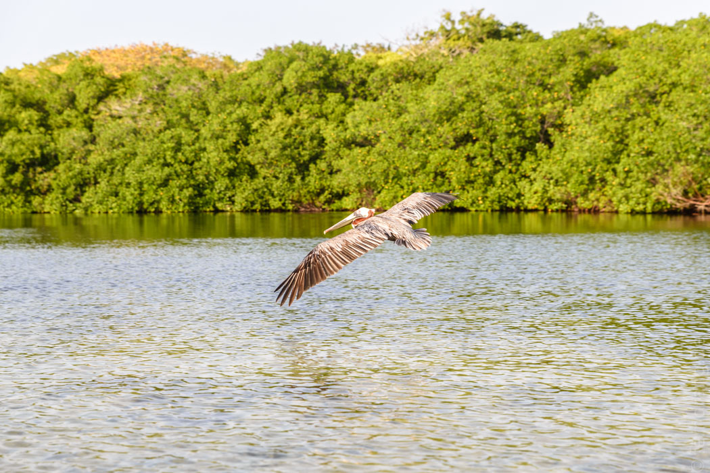
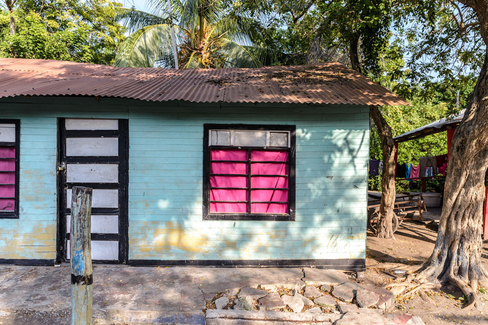
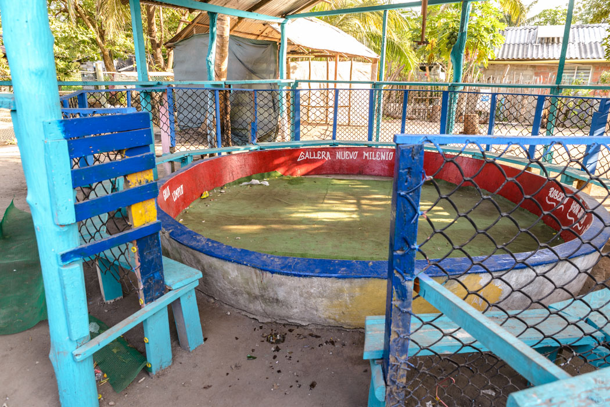
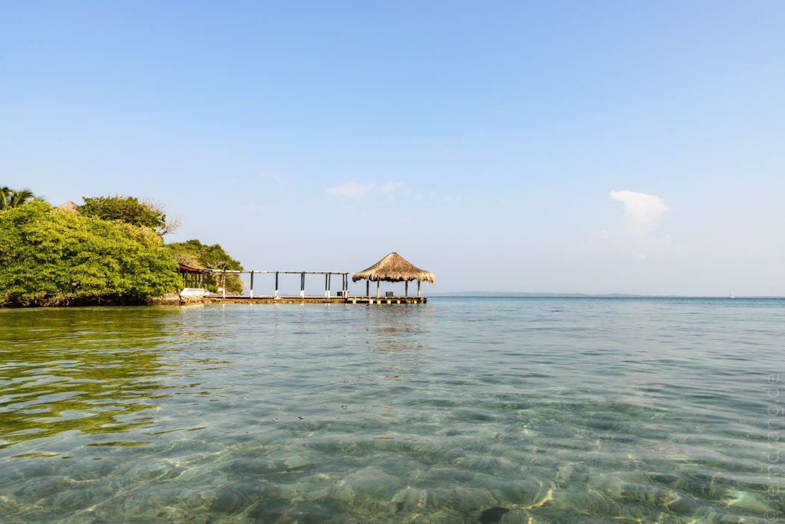

In der Nähe von Cartagena liegen die "Islas del Rosarios", eine kleine Gruppe meist winziger Inseln, auf denen die ganz Reichen Cartagenas ihre Villen haben. Einige sind auch nur genau so groß, wie die Villa, die sie tragen. Auf der Größten, fantasievoll "Isla Grande" genannt, gibt es ein kleines Dorf und einige Unterkünfte. Dort wollten wir auf Empfehlung eine Nacht verbringen, um in einer geheimnisvollen Lagune zu baden.
Die Anfahrt hat uns schon schwer auf die Probe gestellt. Es war Samstag und der Touristen-Kai war proppenvoll. Marco, unser Wirt, war so nett uns dorthin zu führen und uns beim Kaufen des Tickets behilflich zu sein. Trotzdem war das Gedränge groß und die Organisation der Boote verwirrend. Als wir die Nacht auf der Insel im Geiste schon aufgegeben hatten, wurden wir aufgerufen und in ein Boot gesetzt. Um uns herum gesellte sich eine Schar überdrehter Schwachköpfe, bei der nicht klar war, ob sie an diesem Samstagmorgen schon oder noch wach waren. Zumindest haben sie bei jeder Welle gegrölt und geklatscht, bis die Ohren pfiffen. Und Wellen gab es reichlich bei der Überfahrt, die zuerst an der halbfertigen Skyline der Hafenhalbinsel und später an großen Verladekränen und kolonialen Forts vorbeiging. Die Fahrt war eigentlich eine Tour und kein reiner Transport. Daher haben wir zuerst an der "Playa Blanca" halt gemacht, vor der man ausdrücklich warnen muss! Der Strand ist so voll, dass man eher eine andere Person als Sand unter dem Fuß hat. Im Wasser sieht es ähnlich aus. Hier könnte man übers Wasser gehen, wenn die Bananenboote nicht zwischen den Planschenden her rasen würden. Glücklicherweise mussten wir nicht aussteigen, sondern haben nur Passagiere getauscht.
Beim nächsten Stopp nach noch mehr Wellen, Jubeln und Wind wurden wir schon auf einem Steg auf der Isla Grande abgesetzt – zu unserem großen Vergnügen als einzige. Das Boot hat sich grölend zu lustigeren Inseln davon gemacht, während wir schon vom "Eco Hotel Las Palmeras" in Empfang genommen und die drei Minuten zu dessen Gelände in der Mitte der Insel geleitet wurden. Das Hotel besteht aus einfachen Hütten auf einem gerechten Sandplatz. Man hat uns versichert, dass hier alles total Öko sei. Zum Beispiel musste man auf dem (W)C selbst für das Wasser sorgen, das in einer großen Tonne bereitstand. Die Dusche wurde mit einem zweiten Eimer und einer Tonne Süßwasser bedient. Da man jeden Schluck Trinkwasser aber in kleinen Plastikflaschen kaufen musste, beschlich uns der Verdacht, dass Eco ein Euphemismus für primitives Wohnen sein könnte. Natürlich haben sie auch keinen lärmenden Generator sondern nur Solarstrom. Der Nachbar ist allerdings weniger Eco drauf, so dass man dennoch bei lautem Tuckern einschlafen muss. Im Preis für das Zimmer waren drei Mahlzeiten inbegriffen, die mit Ausnahme eines leckeren Fischs ziemlich beklagenswert ausgefallen sind. Besonders ärgerlich war die trostlose Banane zum Frühstück, die wir mit Blick auf einen prall gefüllten, bunten Obstkorb essen durften, dessen Inhalt man noch extra hätte kaufen können.
Aber wir waren ja wegen des Orts da und nicht wegen des Essens. Zum Baden wurden wir zum besten und wahrscheinlich einzigen Strand geführt, der nur ein paar Minuten entfernt lag. Das Stück war zwar klein, aber man konnte dort gut liegen und baden. Am Nachmittag haben wir uns zu einer Kanutour überreden lassen, die durch einige Mangroven bestandene Lagunen führte. Dazwischen gab es komplett überwucherte Verbindungen – ein Mangroventunnel.
Der Guide hat noch eine gratis Runde durch sein Dorf gedreht, das als einzige Sehenswürdigkeit eine kleine (leider leere) Hahnenkampfarena zu bieten hatte. Erstaunlich war allerdings das Niveau, auf dem die Menschen hier ohne Strom und Wasserleitungen leben. In hundert Metern Entfernung machen die reichen Gören aus Cartagena Sauftouren auf gut beschallten Partybooten und eine Stunde weiter werden Wolkenkratzer gebaut. Doch das "Pueblo" auf Isla Grande würde man ohne Änderungsbedarf nach Zimbabwe verlegen können – die komplett schwarze Bevölkerung eingeschlossen.
 Auf einem der zahlreichen Stege haben wir die letzten Sonnenstrahlen genossen und uns schnell auf den Weg gemacht die "Laguna Encantada" noch bei Licht zu finden, damit wir das später nicht auch noch als bezahlte Tour machen mussten. Es gibt keinen einzigen Wegweiser, was wir einer Marketinginitiative unseres Führers zugeschrieben haben, dem die Orientierungslosigkeit der Gäste zu Pass kommt. Außerdem sahen seine Kanu-Paddel verdächtig wie abmontierte Schilder aus.
Nach dem Essen haben wir uns mit Stirnlampen die paar Minuten über die Insel zur Lagune gemacht. Am Steg waren schon eine Menge Leute. Anfangs wurde nur vorsichtig mit dem Fuß ins Wasser getippt. Das hat schon einen kleinen Funkenregen unter Wasser ausgelöst, denn die Lagune ist voll von Algen mit Biolumineszenz. Als dann der erste ins Wasser gesprungen ist, sind alle hinterher. Die Bewegungen im Wasser hatten einen märchenhaften Effekt. Jede Bewegung hat einen Schweif von tanzenden, leuchtenden Pünktchen erzeugt. Die strampelnden Beine waren von einem unwirklichen Leuchten eingehüllt. Über dem lauwarmen Wasser hat die sternklare Nacht das Leuchten fortgesetzt. Wir konnten gar nicht mehr aufhören zu baden und all die kleinen Ärgernisse des Ausflugs waren vergessen.